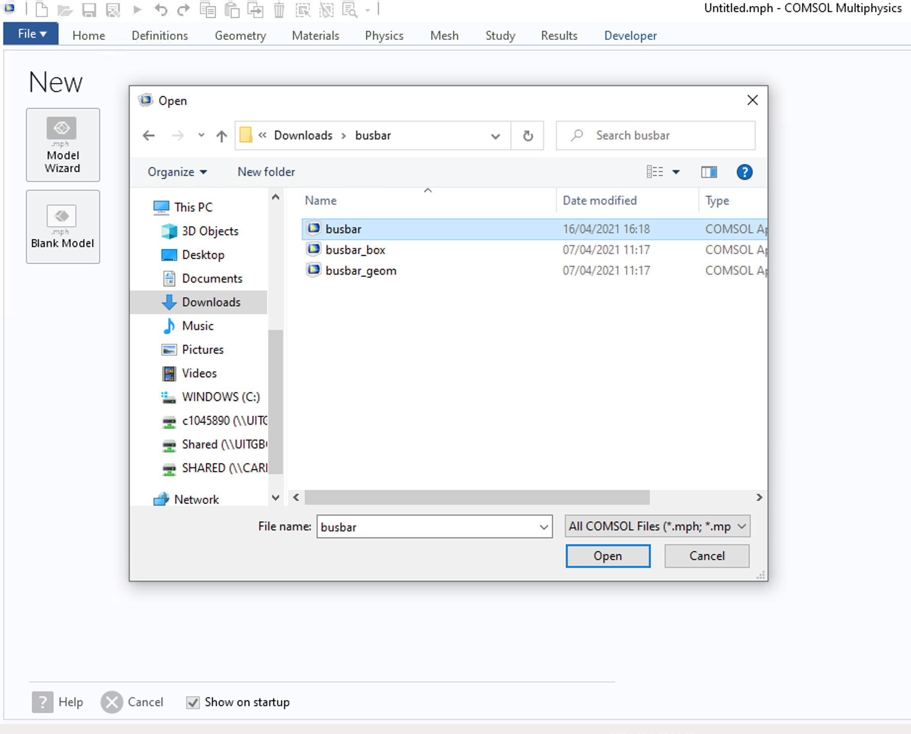
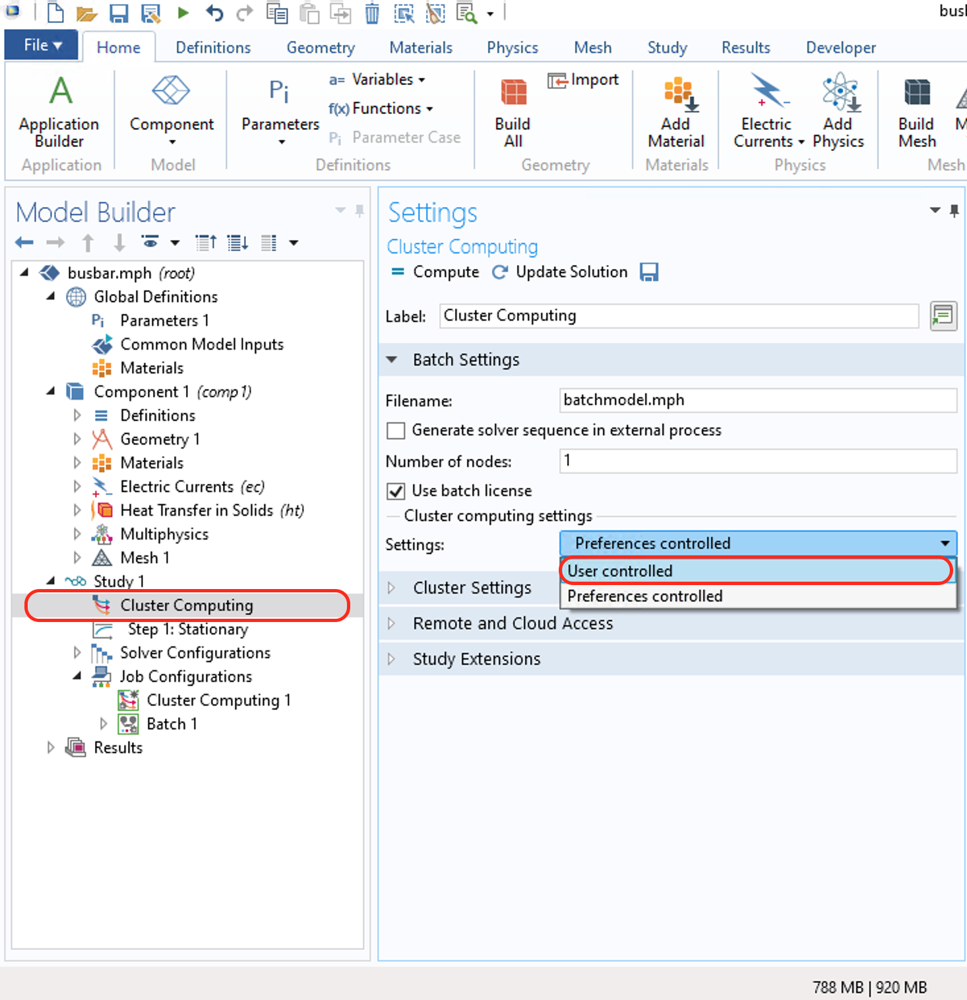
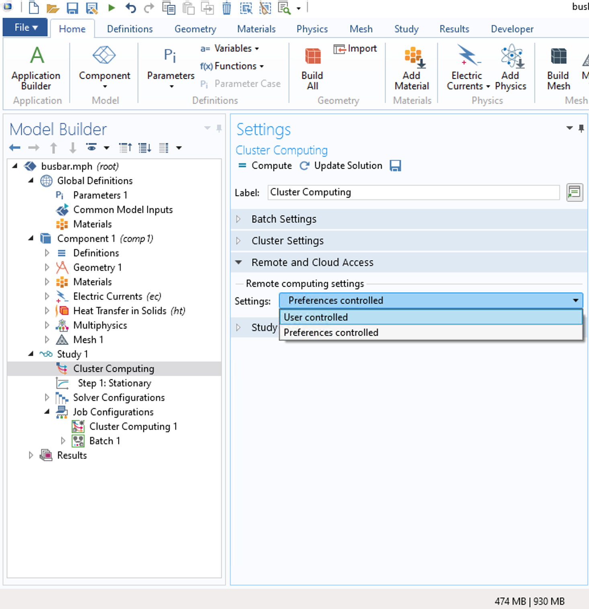
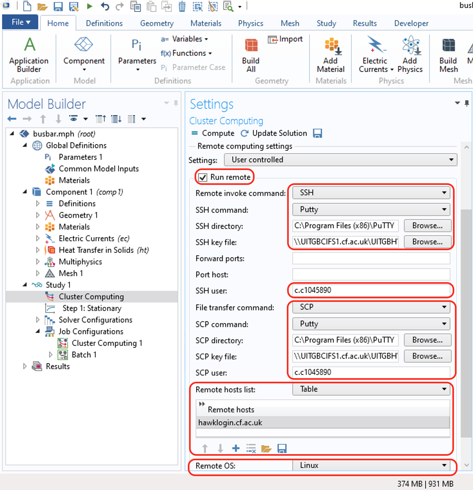
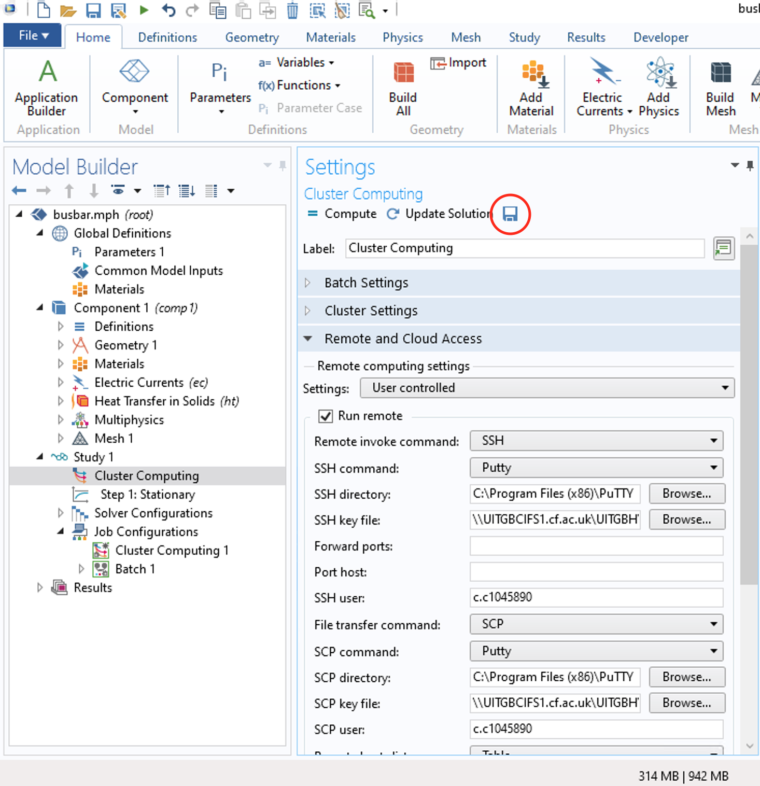
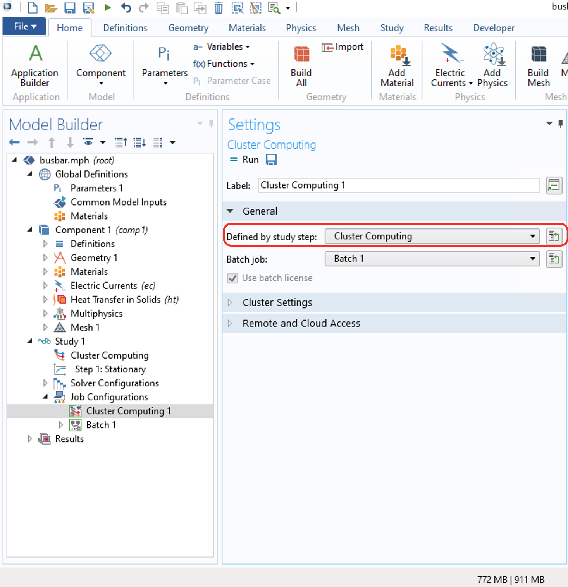

Cluster computing¶
COMSOL has published a blog post with guidance on how to use its Cluster Computing functionality, you can find it here. We aim to complement that guide with specific notes on how to connect to ARCCA’s HPC cluster Hawk and interact with the SLURM job scheduler.
In these notes we will use the Busbar example (as in COMSOL’s original blog post) for version 5.4. You can find the application files here. Open COMSOL and load the model files:
Once the model is loaded, change Preferences controlled to User controlled in the batch settings sections to allow you to enter Hawk specific details like your username and the cluster hostname (later on you can save these settings as default to avoid retyping them again unless you wish to change the simulation requirements).
Batch Settings¶
Now you enter the following Hawk-specific details in the Batch Settings section
Number of nodes: The number of nodes (physical nodes) to use for this job. If not known, we recommend starting with 1 for initial testing and then move to 2 and compare performance (e.g. total runtime) to see if there is a real benefit to using more than 1 node.
Use batch licence: Check this box to run COMSOL using batch licenses to allow running multiple batch jobs for different models that only depend on a parameter. Usually you should use the Cluster Sweep node. This option makes it possible to submit a single batch job from the COMSOL Desktop and continue working there while the cluster job is computing in the background while using only one licence. However, this depends on your local username and your Hawk username matching, if this is not the case, two licence seats will be consumed.
Scheduler type: SLURM.
User: Leave empty.
Queue name: There are a few options for this field depending on your model specific requirements but we recommend dev for short tests (up to one 1 hr and 2 nodes), and compute (for simulations likely to require more than 1 hr or more than 2 nodes).
Directory: This is where the COMSOL output files will be placed on a local computer when the job is finished. This includes intermediate, status, and log files. Requires a Windows path (e.g. C:\Users\<YourWindowsUserName>\Desktop\comsol_results).
Server directory: Not required when executing cluster computing from a local machine
Batch directory: Where model files, status files, and log files should be kept on Hawk during the simulation. We recommed using your scratch directory for this as it provides you with a higher storage and file quota (5TB and 3M files respectively), however, keep in mind that scratch is meant for temporary storage and old or unused files might be removed without warning to free up space in the system. Requires a Linux path (e.g. /scratch/YourHawkUserName/comsol-simulations).
Installation directory: The path where COMSOL is installed on Hawk. For example /apps/local/physics/comsol/all_licences/5.4/bin for version 5.4.
Number of job restarts: This is the maximum number of times the job can be restarted if it fails to complete. We recommend keeping it as 0 (the default) and check the logs and error messages to try to find the cause in case the job fails to complete.
Alive time: The longest time the process is allowed to run before it must inform that it is still running. Failure to do so means that the process is considered dead.
Remote and Cloud Access¶
Enter details in the Remote and Cloud Access section. This is where we specify how to establish the connection between the local computer and remote cluster. First change Preferences controlled to User controlled in this section to allow you to enter Hawk specific details.
Run Remote: Check this box to run COMSOL on a remote machine using a remote start command such as SSH and using a file transfer program such as SCP to transfer the files to and from the remote computer.
Remote Invoke Command: The method for starting COMSOL remotely. Select SSH from the dropdown list to enable SSH-specific options.
SSH command: The program used to run SSH to reach the remote system. In this guide we assume that Putty is available in your Windows local machine.
SSH directory: The path to the SSH executable. Click in browse and navigate to the right directory (e.g. C:\Program Files (x86)\PuTTY).
SSH keyfiles: The path to your SSH keyfile. This allows COMSOL to identify itself in the remote system without you needing to enter your password.
SSH username: Enter your Hawk username.
File transfer command: Choose the method for transferring files to the remote computer. Select SCP from the dropdown list to enable SPC-specific options.
SCP command: The program used to run SCP to reach the remote system. In this guide we assume that Putty is available in your Windows local machine that is also capable of running SCP in addition to SSH.
SCP directory: The path to the SSH executable. Click in browse and navigate to the right directory (e.g. C:\Program Files (x86)\PuTTY).
SSH keyfiles: The path to your SSH keyfile. This allows COMSOL to identify itself in the remote system without you needing to enter your password.
SCP username: Enter your Hawk username.
Remote hosts list: Select Table and click the Add button. A new line will be added in table. Enter hawklogin.cf.ac.uk in the new line.
if the hostname should be read from the Remote hosts table * Remote OS: The Operating System in the remote system. Select Linux.
Save your settings¶
Optionally, you can save these settings to avoid retyping them everytime that you wish to submit a job to Hawk from your local computer. Click on the floppy disk icon (save as default).
Job Configuration¶
It is possible to fine tune your COMSOL job to request specific runtimes, memory, or environment variables. In Hawk it is necessary to specify your project account code. This can be done in the Cluster Computing settings from the Job Configuration section.

First, expand the General section and choose Cluster Computing in the Defined by study step section to make sure we are using the settings that we defined in previous steps
Next expand the Cluster Settings and modify the following fields:
Memory per node (MB): Enter the minimum required. The default is 0, which means no limit.
Runtime (minutes): Enter the Runtime (minutes) before the job is canceled. The maxmimum job runtime in Hawk is 72 hours.
Additional scheduler arguments: Use this field to specify your Hawk project account code:
–account=scwXXXX
and any other scheduler arguments (for example, for mpiexec and environment variables).